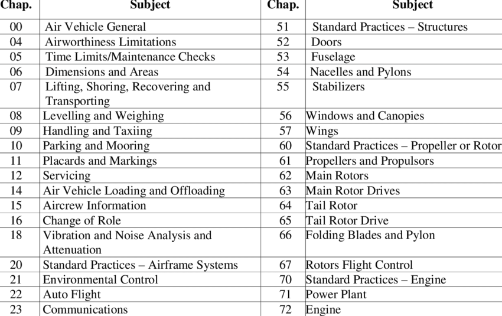
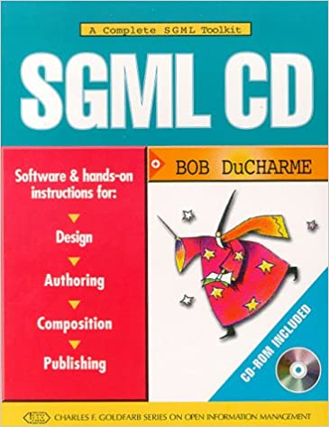
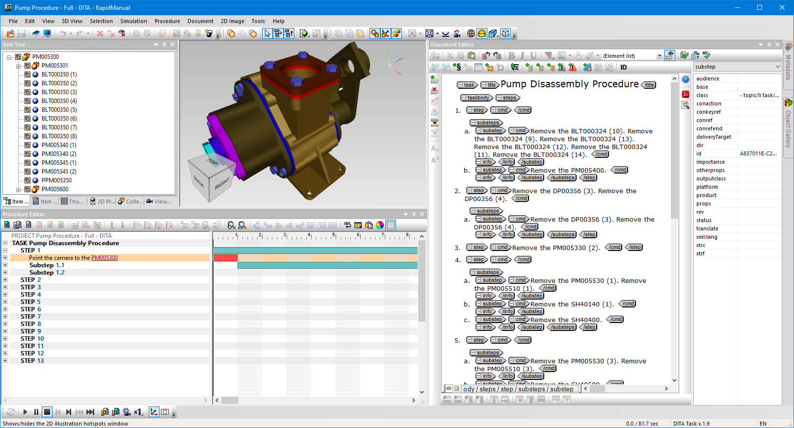
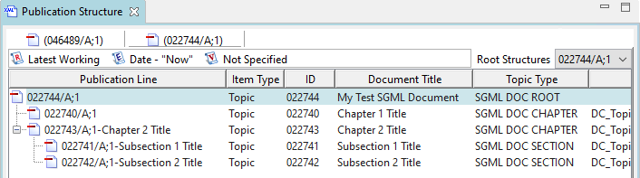
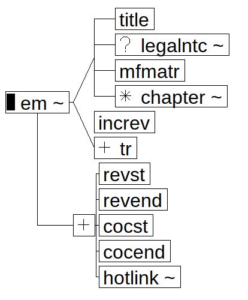

Topic-based SGML?
Really?
Balisage 2021
Ari Nordström | ari.nordstrom@gmail.com
Last year, I got myself a new client...
Go-to guy for everything markup
XSLT, FO, XML standards
DITA
S1000D
ATA (iSpec 100, 2200)
SGML?
SLM and engineering data

Marry CAD with topics
Enter Siemens Teamcenter
Teamcenter CMS module
It's all about topics
Decomposing into topics: XML Attribute Mapping
- DITA, S1000D...
-
Any XML DTD...
...and SGML
The Power of a Good Sales Team
The client:
- Already uses Teamcenter
- S1000D
- ATA iSpec 2200 SGML
Yes, we support SGML
But Does It Really?
Nope
Why Not?
Graphic entities
<!ENTITY g5027619-00.cgm SYSTEM "g5027619-00.cgm" NDATA cgm>
<!ENTITY name SYSTEM "name.suffix" NDATA cgm>
<!ENTITY g5027619-00.cgm SYSTEM "g5027619-00.cgm" NDATA cgm>
<!ENTITY g5027619-00.cgm SYSTEM "g5027619-00.cgm.cgm" NDATA cgm>
DOCTYPE
SGML inclusions
EMPTY elements
<PARA>S/B<SBNBR>73-0177</SBNBR>,
<REVST>Revision 1<REVEND></PARA>
<PARA>S/B<SBNBR>73-0177</SBNBR>,
<REVST>Revision 1</REVST></REVEND></PARA>
</SUBTASK></TASKPROC>
</REVEND>
</TASK></PGBLK></SUBJECT></SECTION></CHAPTER></EM>
Dropping content
<SBEFF EFFTEXT="Bolthead at Bolthole No. 15 Facing
the 12:00 O'clock Position" SBNBR="72-0078" SBCOND="PRE SB">
<SBEFF EFFTEXT="Bolthead at Bolthole No. 15 Facing
the 12:00 o">
Publishing
DSSSL, anyone?
Nah, XML technologies:
- SP for SGML to XML syntax -
ATA-like XML
- XProc pipeline to convert to
monolithic DITA
- XSLT to break apart to DITA topics
- DITA stylesheets
The XML bits were uncomplicated
0-em-basic-structure.xml
1-ATA2DITA_main-structure.xsl.xml
2-ATA2DITA_tasks.xsl.xml
3-ATA2DITA_front-matter.xsl.xml
4-ATA2DITA_tfmatr.xsl.xml
5-ATA2DITA_prclists.xsl.xml
6-ATA2DITA_figtopic.xsl.xml
7-ATA2DITA_effectivity.xsl.xml
8-ATA2DITA_chgdesc.xsl.xml
9-ATA2DITA_dates.xsl.xml
10-ATA2DITA_lxlists.xsl.xml
11-ATA2DITA_table.xsl.xml
12-ATA2DITA_lists.xsl.xml
13-ATA2DITA_block-level.xsl.xml
14-ATA2DITA_graphics.xsl.xml
15-ATA2DITA_delete-ind.xsl.xml
16-ATA2DITA_inline.xsl.xml
17-ATA2DITA_xref.xsl.xml
18-ATA2DITA_ata-inline.xsl.xml
19-ATA2DITA_topic-ids.xsl.xml
20-ATA2DITA_mtoss.xsl.xml
21-ATA2DITA_misc-amattrs.xsl.xml
22-ATA2DITA_revmarkers.xsl.xml
23-ATA2DITA_attrs.xsl.xml
24-ATA2DITA_id-href-consistency.xsl.xml
25-ATA2DITA_ref-target.xsl.xml
26-ATA2DITA_base-attrs.xsl.xml
27-ATA2DITA_move-data-about.xsl.xml
28-ATA2DITA_cleanup.xsl.xml
Other issues
- Decompose/compose performance
- Editor integration
- (etc)
Is SGML (Still) Workable?
Let's look at the evidence...
- Three (3) production-quality editors still around
- Few tools support SGML
- Few people know SGML
XML really is
SGML, the good parts
So, What About XML?
ATA-like XML
DTDs
- SGML inclusions => PIs
- SGML exclusions => Schematron rules in editor
- Graphic entities => href links
XML gives us a choice of tools
Publish
We already have that
SGML to XML import, legacy conversion
We already have that
XML to SGML
- Tweak models in XML
- Generate SGML DOCTYPE (and entities) in XML
- SP to convert to SGML syntax
Bonus feature:
Easily tweak the SGML output to fit different partners, customers
Now
They're testing the ATA XML approach as I speak
SGML?
- No infrastructure (we built all of it, every single time)
- Works as a publishing format